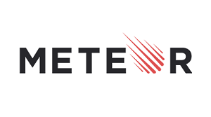
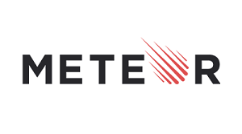
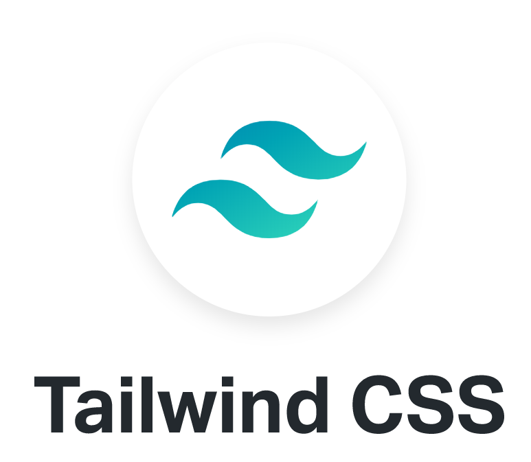

Chrome拡張機能を利用した SetTimerAppと学びについて
Chrome拡張機能を利用した SetTimerAppと学びについて
このページでは、製作したSetTimerAppの紹介とchrome拡張機能の導入について記載します。
| 機能 | 説明 |
|---|---|
| スタート | デフォルト03:00でタイマーをセットしカウントダウンを開始 |
| ストップ | カウントダウンを一時停止。ストップ → スタートで再度カウントダウン開始 |
| リセット | セットタイマーを00:00に設定し、リセットする |
| ユーザーインプット | ユーザーが指定した時間をカウントダウンタイマーにセットする。 |
| 入力アラート | ユーザーインプットで数値以外の入力等、正しく入力された場合にアラートを表示。3秒後に自動で消える。 |
| 背景色点滅 | 橙色点滅：10秒から0秒まで点滅 赤色点滅：0秒になってから3回点滅 |
すべてではないですが、今回のApp製作に使用していたURLです。
※ブログ等もございますので、ソースの信憑性が不明確なところもあります。
chrome extensionの公式HP
情報量は多いがこれまでの講習である程度読み進めることが可能。またビジュアルマニュアルやsamlpeAppもあり分かりやすい。
https://developer.chrome.com/docs/extensions/
Chrome拡張の作り方 (超概要)
Chrome拡張の大まかな製作の流れをまとめたqiita
https://qiita.com/RyBB/items/32b2a7b879f21b3edefc
chrome拡張作り方まとめ
Chrome拡張の大まかな製作の流れをまとめたqiita
https://qiita.com/omukaik/items/4df89dd68a8359907d48
Chrome 拡張機能のマニフェストファイルの書き方
manifest.jsonの解説をまとめたqiita
https://qiita.com/mdstoy/items/9866544e37987337dc79
Chrome拡張の開発方法まとめ その1：概念編
Chrome拡張の実行内容・フォルダ構成をまとめたqiita
https://qiita.com/k7a/items/26d7a22233ecdf48fed8
【結構簡単】ブラウザアクションボタン発火の自作Chrome拡張機能の作り方＆サンプル
Webページをグレースケール化するブラウザアクションのハンズオン
http://degitekunote.com/blog/2016/11/02/chrome-extension/
manifest_version:2 から 3に修正するケース
manifest_version:2
で記載されている参考ページが多い。2023年6月現在ではmanifest_version:3が必要。
https://qiita.com/TiggeZaki/items/bb35afe43c347d38dc4e
画像サイズ変更 アイコン作成用
簡易的に画像のサイズ変更が可能。
https://www.iloveimg.com/ja
Chrome機能拡張のバックグラウンドページについて
background.jsについての解説まとめ
https://oxynotes.com/?p=8906
| ファイル名 | 説明 |
|---|---|
| iconxxx.png | アプリのアイコンpng画像。今回は同じ画像を各サイズ用意 |
| timer.html | アプリ実行時に表示されるhtml |
| manifest.json | Chrome拡張機能の機能と構成を記述するJSON |
| background.js | scriptsに初期化処理やAPI呼び出し、定期実行する処理、イベントリスナー等の記述等行うJavaScript |
| popup.js | Appの動作を記述しているJavaScript |
| style.css | timer.htmlのスタイルを記述しているcss |
SetTeimrAppのソースファイルを下記GitHub Gistにupしました。
https://xxx 現在細くコメント記載中
Web開発フレームワーク


 

UIコンポーネントフレームワーク



web開発に限ったことではありませんが、実現可能か調査を織り込みながら要件定義を行い製作に取り掛かると
結果的に工数低減につなげられたかなと思います。
調べながら製作することで該当目的以外の知識も習得し、追加機能やデザインを凝りたくなります､､､が
必要最低限の機能と優先順位付けも大切。テスト駆動開発の様な考え方が良いと感じました。
ソースコードやエラーコードを避けない。成長を実感。